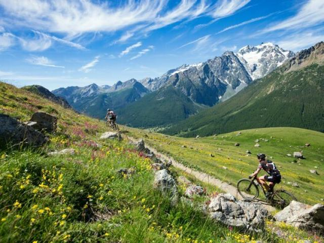

Nihil est enim virtute amabilius, nihil quod magis adliciat ad diligendum, quippe cum propter virtutem et probitatem etiam eos, quos numquam vidimus, quodam modo diligamus. Quis est qui C. Fabrici, M'. Curi non cum caritate aliqua benevola memoriam usurpet, quos numquam viderit? quis autem est, qui Tarquinium Superbum, qui Sp. Cassium, Sp. Maelium non oderit? Cum duobus ducibus de imperio in Italia est decertatum, Pyrrho et Hannibale; ab altero propter probitatem eius non nimis alienos animos habemus, alterum propter crudelitatem semper haec civitas oderit.
Iam virtutem ex consuetudine vitae sermonisque nostri interpretemur nec eam, ut quidam docti, verborum magnificentia metiamur virosque bonos eos, qui habentur, numeremus, Paulos, Catones, Galos, Scipiones, Philos; his communis vita contenta est; eos autem omittamus, qui omnino nusquam reperiuntur.

Ibi victu recreati et quiete, postquam abierat timor, vicos opulentos adorti equestrium adventu cohortium, quae casu propinquabant, nec resistere planitie porrecta conati digressi sunt retroque concedentes omne iuventutis robur relictum in sedibus acciverunt.

Intellectum est enim mihi quidem in multis, et maxime in me ipso, sed paulo ante in omnibus, cum M. Marcellum senatui reique publicae concessisti, commemoratis praesertim offensionibus, te auctoritatem huius ordinis dignitatemque rei publicae tuis vel doloribus vel suspicionibus anteferre. Ille quidem fructum omnis ante actae vitae hodierno die maximum cepit, cum summo consensu senatus, tum iudicio tuo gravissimo et maximo. Ex quo profecto intellegis quanta in dato beneficio sit laus, cum in accepto sit tanta gloria.
Ibi victu recreati et quiete, postquam abierat timor, vicos opulentos adorti equestrium adventu cohortium, quae casu propinquabant, nec resistere planitie porrecta conati digressi sunt retroque concedentes omne iuventutis robur relictum in sedibus acciverunt.
Ibi victu recreati et quiete, postquam abierat timor, vicos opulentos adorti equestrium adventu cohortium, quae casu propinquabant, nec resistere planitie porrecta conati digressi sunt retroque concedentes omne iuventutis robur relictum in sedibus acciverunt.

Ibi victu recreati et quiete, postquam abierat timor, vicos opulentos adorti equestrium adventu cohortium, quae casu propinquabant, nec resistere planitie porrecta conati digressi sunt retroque concedentes omne iuventutis robur relictum in sedibus acciverunt.